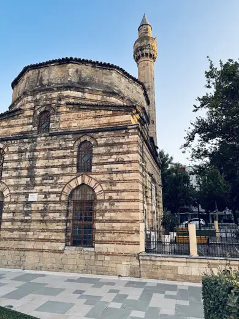
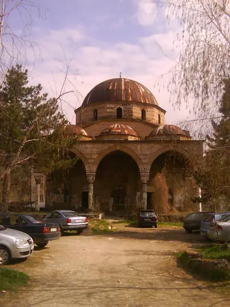
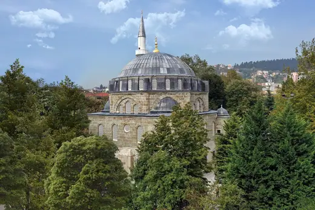
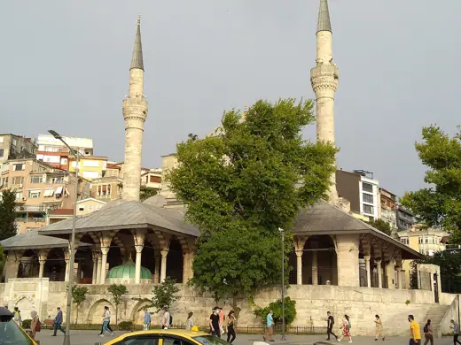
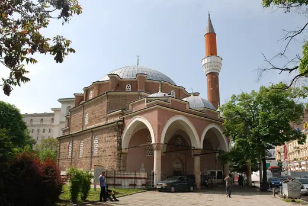
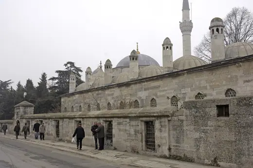

Mimar Sinan buildings 33
Sort

Muradie Mosque1542 · Vlorë Hadim Ibrahim Pasha Mosque1551 · Istanbul
Hadim Ibrahim Pasha Mosque1551 · Istanbul Süleymaniye Mosque1557 · Istanbul
Süleymaniye Mosque1557 · Istanbul
Gazi Hajdar Kadi Mosque1561 · Bitola Juma-Jami Mosque1564 · Yevpatoria
Juma-Jami Mosque1564 · Yevpatoria Mihrimah Sultan Mosque, Edirnekapı1570 · Istanbul
Mihrimah Sultan Mosque, Edirnekapı1570 · Istanbul Kara Ahmed Pasha Mosque1572 · Istanbul
Kara Ahmed Pasha Mosque1572 · Istanbul Piyale Pasha Mosque1573 · Istanbul
Piyale Pasha Mosque1573 · Istanbul Şeyhi Çelebi Mosque1574 · Edirne
Şeyhi Çelebi Mosque1574 · Edirne Mehmed Paša Sokolović Bridge1577 · Višegrad
Mehmed Paša Sokolović Bridge1577 · Višegrad Sokollu Mehmed Pasha Mosque, Azapkapı1578 · Istanbul
Sokollu Mehmed Pasha Mosque, Azapkapı1578 · Istanbul
Pertev Paşa Mosque1579 · İzmit Şemsi Pasha Mosque1581 · Istanbul
Şemsi Pasha Mosque1581 · Istanbul Muradiye Mosque, Manisa1585 · Manisa
Muradiye Mosque, Manisa1585 · Manisa Zal Mahmud Pasha Mosque1590 · Istanbul
Zal Mahmud Pasha Mosque1590 · Istanbul
Mihrimah Sultan Mosque, Üsküdar1548 · Istanbul Şehzade Mosque1548 · Istanbul
Şehzade Mosque1548 · Istanbul Sinan Pasha Mosque (Istanbul)1554 · Istanbul
Sinan Pasha Mosque (Istanbul)1554 · Istanbul Süleymaniye Hamam1557 · Istanbul
Süleymaniye Hamam1557 · Istanbul Caferağa Medrese1559 · Istanbul
Caferağa Medrese1559 · Istanbul Takiyya al-Sulaymaniyya1559 · Damascus
Takiyya al-Sulaymaniyya1559 · Damascus Rüstem Pasha Mosque1563 · Istanbul
Rüstem Pasha Mosque1563 · Istanbul
Banya Bashi Mosque1566 · Sofia
Sokollu Mehmed Pasha Mosque, Lüleburgaz1569 · Lüleburgaz Osman Shah Mosque1570 · Trikala
Osman Shah Mosque1570 · Trikala Sokollu Mehmed Pasha Mosque, Kadırga1572 · Istanbul
Sokollu Mehmed Pasha Mosque, Kadırga1572 · Istanbul Hajji Ahmed the Ducat Minter's Mosque1574 · Livno
Hajji Ahmed the Ducat Minter's Mosque1574 · Livno Selimiye Mosque1575 · Edirne
Selimiye Mosque1575 · Edirne Yahya Bey Mosque1578 · Edirne
Yahya Bey Mosque1578 · Edirne Kılıç Ali Pasha Complex1580 · Istanbul
Kılıç Ali Pasha Complex1580 · Istanbul Molla Çelebi Mosque1584 · Istanbul
Molla Çelebi Mosque1584 · Istanbul Atik Valide Mosque1586 · Istanbul
Atik Valide Mosque1586 · Istanbul